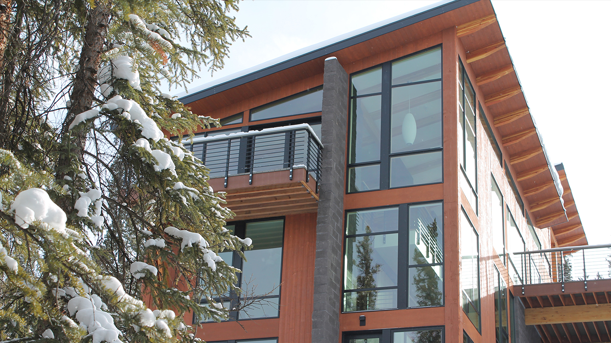
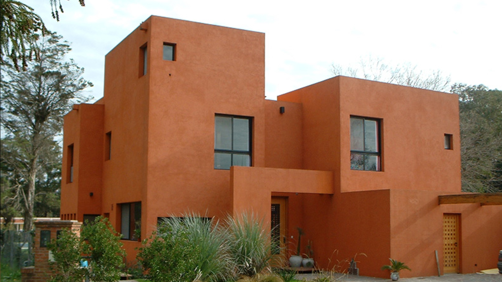
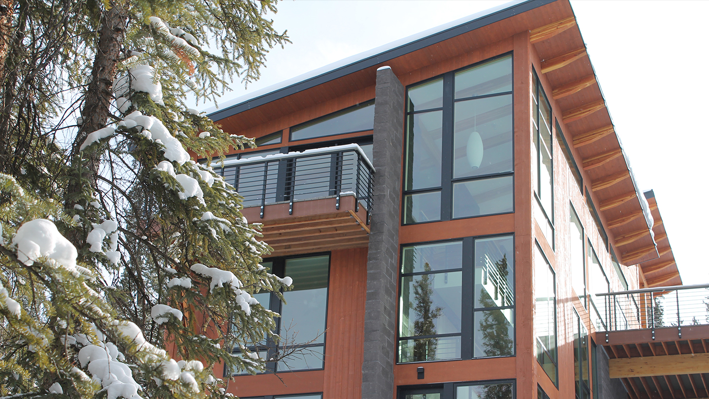
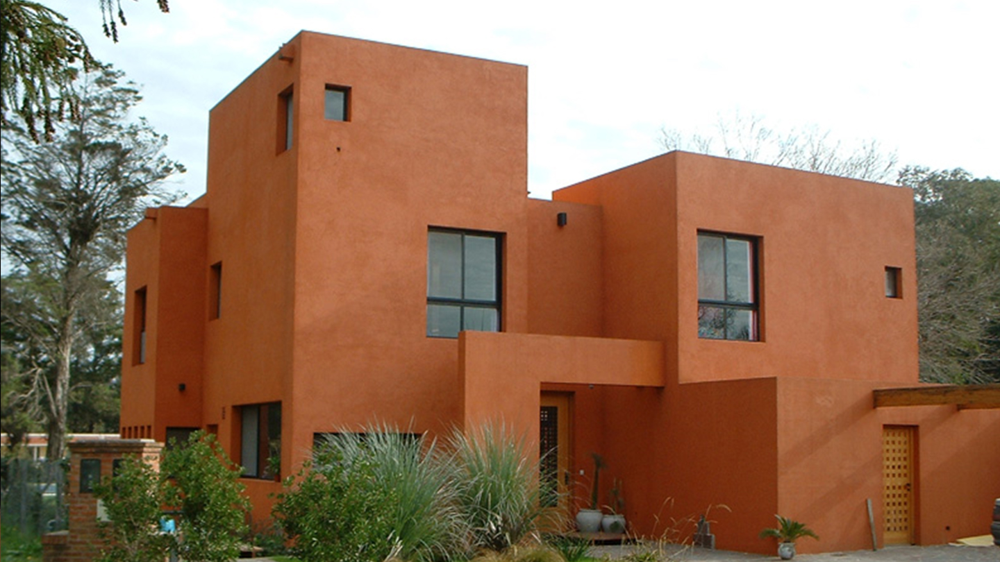

About

SoiDesign is a design practice founded by Federico Soifer, a senior designer with 20 years of
professional experience in the field of design and architecture.
Federico began his career as an architect in Buenos Aires Argentina providing residential and
commercial
design for some of the most well known residents and businesses in the city including,
Blockbuster
Video, BBV Banco Frances, Correo Argentino, Obras Civiles, EPG World, Municipalidad del Pilar,
among
others.
In 1991, with Santiago Cordeyro, Federico co-founded Cordeyro & Soifer Arquitectos in Buenos
Aires,
Argentina. As a principal of the firm, from 1991 to 2001, Federico developed more than 180
projects and
construction supervisions of single family, commercial, offices, industrial and urban design
types.
The company is a leader in the field of residential and commercial architecture, with projects
in cities
across Argentina and Uruguay.
Since 2002 Federico has been working in the Washington DC area, participating in every step of
the
design process of more than 30 large multifamily and single residential projects.
He worked as a designer and senior designer in SK&I Architectural Design Group and Dorsky
Hodgson
Parrish Yue Architects.
Federico is a LEED AP and received his degree in Architecture from the University of Buenos
Aires,
Buenos Aires, Argentina.
" In SoiDesign we believe in design that is simple, elegant, bold and original. We understand about it’s constraints, but we also understand its’ power. We are passionate about it. "
Projects
We specialize in residential design, creating spaces that are both functional and inspiring. But that's not all – our studio has worked on a variety of projects, from commercial spaces to creative collaborations. Explore our portfolio to see the full range of our work.


Contact
Address: Washington D.C., United States
Email: fedesoifer@gmail.com
Phone: +1 202-446-8189.